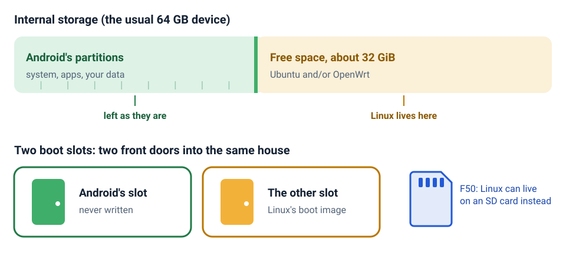
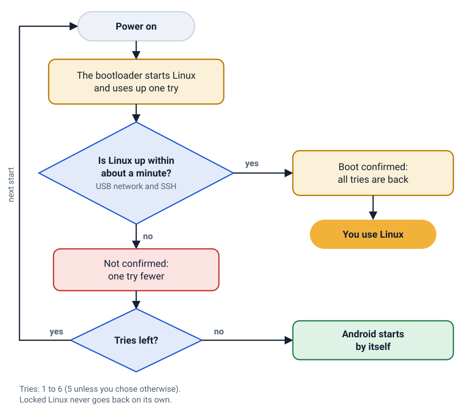
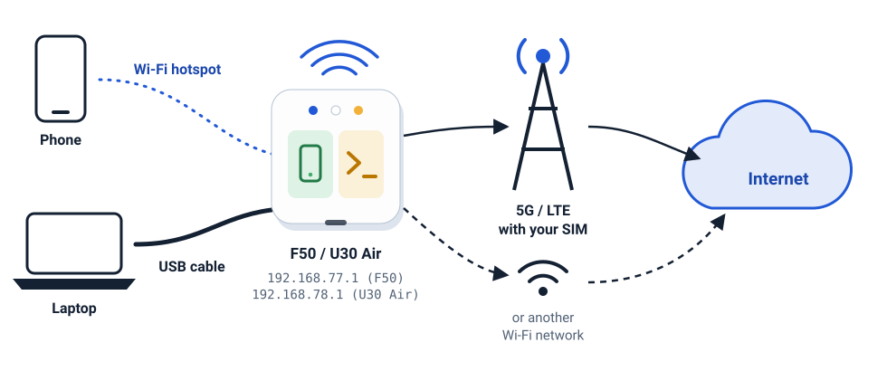

Your 5G hotspot is a Linux computer
Install Ubuntu or OpenWrt next to Android on the ZTE F50 / MU300 and the ZTE U30 Air. SSH, Wi-Fi, Bluetooth and the 5G modem work. Android stays, and if Linux ever fails to start, the device goes back to it by itself.

What is this?
The ZTE F50 is a small box that takes a SIM card and shares 5G internet over Wi-Fi. Inside it is a little computer running Android. This project puts a real Linux system on it, next to Android.
Think of it as a Raspberry Pi that already has a 5G modem, a Wi-Fi access point and 32 GB of storage inside. The ZTE U30 Air is the same board and chip with a battery, and it is supported too.
Why would you want that?
- A 5G router you controlOpenWrt with its LuCI web interface, a firewall and your own rules, for every phone and laptop on the hotspot.
- A pocket serverUbuntu 24.04 or 26.04 LTS with systemd and
apt: run your own services with their own internet connection. - A modem you can talk toRead and send SMS, send USSD codes, and on the control panel lock bands and cells.
- A VPN for everything behind itWireGuard, OpenVPN, VLESS and more, with a kill switch, as an optional module.
What works
- Mobile data, 5G NSA and LTEShared with Wi-Fi and USB clients; reconnects by itself after modem resets.
- Wi-Fi hotspot5 GHz (802.11ac) or 2.4 GHz, one at a time.
- Wi-Fi clientJoin another network (WPA2, WPA2/WPA3 mixed) and share it over USB.
- USB network and SSHPlug it into a computer and it appears as a network adapter.
- SMS and USSD
smsandmu300-ussdon the command line, and in the control panel. - VPNProfiles for WireGuard, OpenVPN, VLESS, VMess, Trojan, Shadowsocks, Clash/mihomo; Tailscale through the tunnel.
- Three kernelsUnisoc's vendor 5.4, mainline 6.18 LTS and mainline 7.2, with KVM on all three.
- Bluetooth and GPUBlueZ, and the Mali-G57 for OpenCL (no screen output).
- Android staysOne command switches back, and failed starts fall back by themselves.
- No screen, no soundUSB-C video does not work and the board has no speaker or microphone.
Supported devices
| ZTE F50 / MU300 | ZTE U30 Air | |
|---|---|---|
| Chip | Unisoc T760 (UMS9620) | the same |
| Power | USB only | battery (4050 mAh), charger and fuel gauge |
| USB network address | 192.168.77.1 | 192.168.78.1 |
| SD card | Linux can live on a card instead of the internal storage | no card slot |
| Extras | status LEDs | status LEDs, battery readings, NFC tag, USB host with an OTG adapter (mainline kernels) |
The installer reads which one it is from Android, so you never pick it by hand. The U30 Pro is a different chip (UMS9632) and is not supported. Most units have 64 GB of internal storage; on the 32 GB variant, read the check step before anything else.
How it works, like a story
Four small pictures explain everything that matters.
1. One house, two rooms
Your device is like a house. Android already lives in one room, with all its things. On the usual 64 GB device there is a second, empty room nobody uses: about 32 GiB of storage after Android's partitions. Linux moves into that empty room. Nothing in Android's room is moved or changed.
The house also has two front doors, called boot slots A and B. Android uses one of them. The installer puts Linux's door, its boot image, on the other one.

2. Every start is a trial
Each time the device starts Linux, it treats the start as a trial and uses up one try. When Linux is up (the USB network and SSH work), Linux tells the device "this start was good", and all tries are back. If Linux does not come up, the try stays used. After 5 failed starts in a row (you choose 1 to 6), the device simply starts Android instead. You cannot lock yourself out by accident.

3. Going back to Android is one command
From Linux, ask for Android at the next start and restart:
sudo mu300-next-boot android
sudo rebootFrom Android, Linux comes back with su -c mu300-linux or the Action button of the "MU300 Linux"
Magisk module the installer adds. To remove Linux for good, run the uninstaller from your computer. All of this is on
the updates and safety page.
4. Your own network, on your desk
Phones and laptops join the device's Wi-Fi hotspot, or plug into its USB port. The device takes them to the
internet over 5G or LTE with your SIM card, or over another Wi-Fi network it has joined. Over USB, your computer
reaches the device itself at 192.168.77.1 (F50) or 192.168.78.1 (U30 Air).

Quick start
About 15 minutes, on Windows, macOS or Linux, with the device rooted and connected by USB. The install guide walks through every question.
Check
./install.sh --checkonly reads the device and tells you whether, and where, Linux fits.Install
./install.shasks a few questions, shows what it will write and waits for you to typeINSTALL.Log in
About a minute later:
ssh ubuntu@192.168.77.1, or openhttp://192.168.77.1for OpenWrt.
git clone https://github.com/dikeckaan/mu300-linux
cd mu300-linux
./install.sh --check # reads only, writes nothing
./install.sh # Windows: .\install.ps1 or install.cmdWhat it costs you
- Android and Linux share the device. Only one runs at a time; a restart switches between them.
- No screen output. It is a headless machine that you use over SSH or a web page.
- No sound. The board has no speaker and no microphone; voice calls with audio do not work.
- About 1.4 GB of RAM. Most of the rest is reserved for the modem firmware.
This is an experimental project made in spare time. It is not a product, it has no support line and it comes with no warranty. Writing to a phone-class device can leave it unusable, and rooting, unlocking and recovery tools are outside this project. Keep a backup, and do not install on a device you cannot afford to lose. Changing what your device sends (TTL, band locks, VPNs) may break your operator's terms or local law. Read the full notice in the README.
Questions people ask
Will installing Linux delete Android or my data?
On the usual 64 GB device, no. Linux goes into about 32 GiB of storage that belongs to no partition, and Android's partitions, its data and the partition table are never written. The installer writes only one boot partition (the slot Android is not using) and 32 bytes of misc.
The 32 GB variant is the exception: it has no free space at all. There you can use an SD card (F50), or let the installer shrink userdata, which erases everything in Android. That path is experimental and asks you to type ERASE first.
Do I need to root the device first?
Yes. The device must already be rooted and unlocked: it must already boot a modified Android boot image, with USB debugging on. Getting there is not part of this project, and you do it at your own risk with those tools' own instructions.
What happens if Linux does not start?
The device goes back to Android by itself. Every start of Linux is a trial; if it fails 5 times in a row (you choose 1 to 6 when you install), the next start is Android. See the safety net.
How do I get back to Android?
From Linux: sudo mu300-next-boot android, then sudo reboot. To remove Linux completely, run ./uninstall.sh (Windows: .\uninstall.ps1) while the device is in Android. From Android, su -c mu300-linux starts Linux again.
Ubuntu or OpenWrt: which one should I pick?
OpenWrt if you mostly want a router with a web interface; Ubuntu if you want a small server with apt. You can also install both and switch with mu300-os. The choosing guide explains it, together with the three kernels.
Is the ZTE U30 Pro supported?
No. The U30 Pro has a different chip (UMS9632). Supported are the ZTE F50 / MU300 and the ZTE U30 Air, which share the same board and chip; the installer recognises which one it is talking to.
Can I install it without a computer?
Yes, if the device already runs a rooted Android with Magisk 26 or newer: each release has Magisk zips, one per system and kernel, that install from the Magisk app. OpenWrt with the control panel comes only with the computer installer. See installing with a Magisk zip.
Can I put Linux on an SD card?
On the F50, yes: with a card of at least 700 MiB in the slot the installer asks whether Linux goes there. The U30 Air has no card slot.
Is there a screen, or sound?
No. HDMI over USB-C does not work and the board has no speaker or microphone. You use the device over SSH, a web interface or a serial console.
Does it cost anything?
No. The scripts and documentation are MIT-licensed and the kernels are GPL-2.0. The release images contain no proprietary files: the installer copies the Wi-Fi and modem files from your own device.
Where to go next
- Install guide: every step and every question, for beginners.
- Choose a system: Ubuntu, OpenWrt or the control panel, and which kernel.
- Features: mobile data, hotspot, Wi-Fi client, SMS, VPN, battery and LEDs.
- Updates and safety: updating, rolling back, going back to Android, uninstalling.
- Troubleshooting: known problems and their fixes.
- The wiki: a glossary of every technical word, and deeper pages.